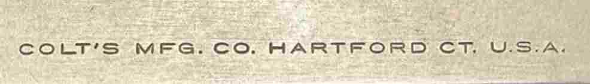

M1911 & M1911A1 Slide Identification Guide
Slides are one of the first features to review on a U.S. military M1911 or M1911A1.
The slide can identify the slide manufacturer and period, but it does not always prove
the pistol is original. U.S. service pistols were rebuilt, repaired, refinished, and
fitted with replacement slides throughout their service life.
Collector Rule:
The slide identifies the slide. The frame serial number, frame markings, inspector marks,
finish, barrel, small parts, and rebuild marks must also be reviewed before calling a pistol
original, correct, rebuilt, or mixed.
Photo Example: Colt Commercial Government Model Slide
The photos below show a Colt commercial Government Model slide. This is a useful example
because the slide is Colt marked, but the left-side roll mark identifies it as a commercial-pattern
Government Model slide rather than a standard U.S. military M1911A1 slide.
![Colt commercial Government Model left side slide marking]()
Left side: “GOVERNMENT MODEL / COLT AUTOMATIC CALIBER .45” with Rampant Colt logo.
The “Government Model” marking is the key clue that this is a commercial-style slide marking.

Right side: “COLT’S MFG. CO. HARTFORD CT. U.S.A.” This is the Colt manufacturer/address marking.
It confirms the slide is Colt marked, but by itself it does not prove the entire pistol is an original Colt military configuration.
| Observed Feature | What It Indicates | Collector Explanation |
|---|
| “GOVERNMENT MODEL” on left side |
Commercial Colt Government Model style marking |
Military M1911/M1911A1 slides normally use military model and patent/address markings. A Government Model slide on a military frame should be described as a commercial slide or replacement unless documentation proves otherwise. |
| “COLT AUTOMATIC CALIBER .45” |
Commercial caliber/model roll mark |
This wording is associated with Colt commercial Government Model slides and helps separate it from WWII contractor slide markings. |
| Rampant Colt logo at rear of left slide |
Colt slide branding |
The Rampant Colt confirms Colt-style branding, but logo position and style must be compared with period-correct references. |
| “COLT’S MFG. CO. HARTFORD CT. U.S.A.” on right side |
Colt Hartford address marking |
This is an address/manufacturer roll mark. It identifies the slide marking, not the entire pistol’s originality. |
Database Label Example:
Colt commercial Government Model .45 slide. Not a standard WWII U.S. military M1911A1 slide marking.
If found on a U.S. military frame, describe it as a commercial Colt replacement/mixed slide unless stronger documentation supports another conclusion.
Slide Photo Checklist
| Photo | Why It Matters |
|---|
| Left side slide marking | Shows manufacturer roll mark, patent information, address lines, logo placement, and font style. |
| Right side slide marking | Shows model marking, military designation, or contractor-specific right-side information. |
| Top of slide near rear sight | Shows the P proof mark when present and helps compare proof orientation and placement. |
| Rear of slide | Shows machining, finish, and any marks visible around the firing pin stop area. |
| Underside of slide | Can show hidden production, inspection, or replacement marks. |
| Front and rear sights | Helps evaluate whether the sight style fits the period or appears replaced. |
| Finish and wear | Slide finish should be compared against the frame, barrel, and small parts. |
Major Slide Types
| Slide Type | Typical Identification | Collector Notes |
|---|
| Colt M1911 / M1911A1 |
Colt patent and address roll marks with Rampant Colt placement/style depending on period. |
Compare patent lines, address format, logo location, proof marks, finish, and frame serial range. Colt slides changed over time. |
| Colt Commercial Government Model |
Often marked “GOVERNMENT MODEL” and “COLT AUTOMATIC CALIBER .45” with Colt address marking. |
Commercial-pattern slide. If installed on a U.S. military frame, treat as a commercial replacement or mixed slide unless documentation proves otherwise. |
| Springfield Armory M1911 |
Springfield Armory slide markings from WWI production. |
Do not confuse WWI Springfield Armory production with later arsenal rebuild markings. Springfield Armory was not a WWII M1911A1 contractor. |
| Remington-UMC M1911 |
Remington-UMC / Bridgeport style WWI slide markings. |
WWI Remington-UMC slides are separate from WWII Remington Rand slides and should not be treated as the same manufacturer. |
| Singer M1911A1 |
S. MFG. CO. / Elizabeth, N.J. style marking. |
Extremely scarce. A Singer-marked slide requires careful comparison with the frame range, proofs, finish, and expert review. |
| Ithaca M1911A1 |
ITHACA GUN CO., INC. / ITHACA, N.Y. style marking. |
Best evaluated with the F.J.A. inspected frame, serial range, P proof, finish, and small parts. Be careful with the Colt/Ithaca duplicate serial range. |
| Remington Rand M1911A1 |
REMINGTON RAND, INC. / Syracuse, New York or Syracuse, N.Y. U.S.A. style markings. |
Multiple slide marking styles exist. Match the style to the production period and evaluate with F.J.A. frame inspection markings. |
| Union Switch & Signal M1911A1 |
U.S. & S. CO. / Swissvale, Pa. style marking. |
Should be compared with R.C.D. inspected frame features, finish, proof marks, and small parts. |
| Government Replacement Slide |
Drawing numbers, replacement markings, or non-original military replacement characteristics. |
Replacement slides are legitimate service parts, but they should be described as replacement slides rather than original production slides. |
Correctness Review
| Area | What To Check |
|---|
| Frame serial range | Confirm the frame manufacturer and production period before judging the slide. |
| Slide manufacturer | The slide maker should make sense for the pistol if claiming original or correct configuration. |
| Proof marks | Look for top slide P proof marks and compare placement, orientation, and finish wear. |
| Finish | Compare color, texture, edge wear, and wear pattern between slide and frame. |
| Heat-treatment appearance | Some slides show visible hardening or color differences. Treat this as one clue, not the only proof. |
| Sights | Check whether front and rear sights fit the period or appear altered/replaced. |
| Roll mark sharpness | Weak, rounded, buffed, or washed-out markings may indicate refinishing or alteration. |
| Rebuild marks | Arsenal rebuild markings can explain a mixed slide/frame combination. |
Common Slide Categories
| Category | Description | How To Describe It |
|---|
| Original matching-period slide | Slide maker, markings, finish, proofing, and wear appear consistent with the frame manufacturer and serial range. | Potentially original or correct, pending full review. |
| Period service replacement | Military slide from the correct general era, but not necessarily original to that frame. | Period replacement or service replacement. |
| Arsenal rebuild slide | Slide/frame mismatch explained by depot rebuild, refinishing, or documented service repair. | Arsenal rebuild or rebuilt service pistol. |
| Postwar replacement slide | Later drawing-number or replacement slide used after original production. | Postwar replacement slide. |
| Commercial or modern slide | Commercial Colt, modern commercial, or modified slide fitted to a military frame. | Commercial replacement, modern replacement, or modified pistol. |
Red Flags
- Slide maker does not match the claimed frame manufacturer or production period.
- Fresh finish over weak, buffed, or rounded roll marks.
- Modern sights or cuts on a pistol being sold as untouched military original.
- WWI slide installed on a WWII M1911A1 frame without being described as mixed or rebuilt.
- Commercial Government Model slide installed on a military frame and described as original military issue.
- Replacement drawing-number slide described as original WWII production.
- Serial number used as the only proof of originality.
Website Evaluation Wording
Suggested wording:
This pistol appears to have a slide that is consistent with [manufacturer / period] based on visible markings.
Final evaluation should compare the frame serial range, inspector marks, proof marks, finish, barrel, grips,
small parts, and any arsenal rebuild markings. The slide marking alone does not prove full pistol originality.